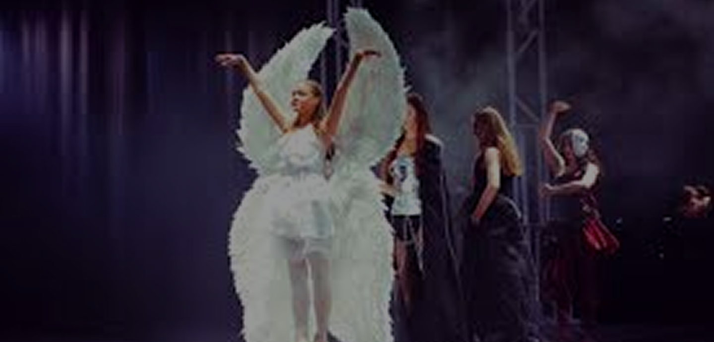

2 сентября 2026
Открыт набор
в творческие коллективы на новый сезон

В центр переехало более 30 клубных формирований от культурного центра «Возрождение» (это прежнее учреждение культуры города), с общим числом участников более 500 человек. Упоминаются также Центр развития хореографии «Высота» и Костромской драматический театр им. А. Н. Островского как участники открытия. Приоритетное направление работы — гражданско-патриотическое воспитание. Это первое крупное учреждение культуры в развивающемся микрорайоне Давыдовский.
В центр переехало более 30 клубных формирований от культурного центра «Возрождение» (это прежнее учреждение культуры города), с общим числом участников более 500 человек. Упоминаются также Центр развития хореографии «Высота» и Костромской драматический театр им. А. Н. Островского как участники открытия. Приоритетное направление работы — гражданско-патриотическое воспитание. Это первое крупное учреждение культуры в развивающемся микрорайоне Давыдовский.